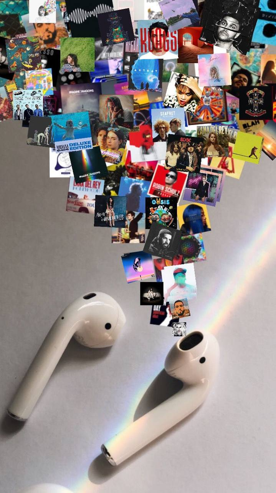
Listening Song
I enjoy listening Song on various genre, especially R&B and Pop. For example:
- Residuals (Chris Brown)
- Billie Eilish (Kiss of Life)
- Old Love(Yuji ft. Putri Dahlia)
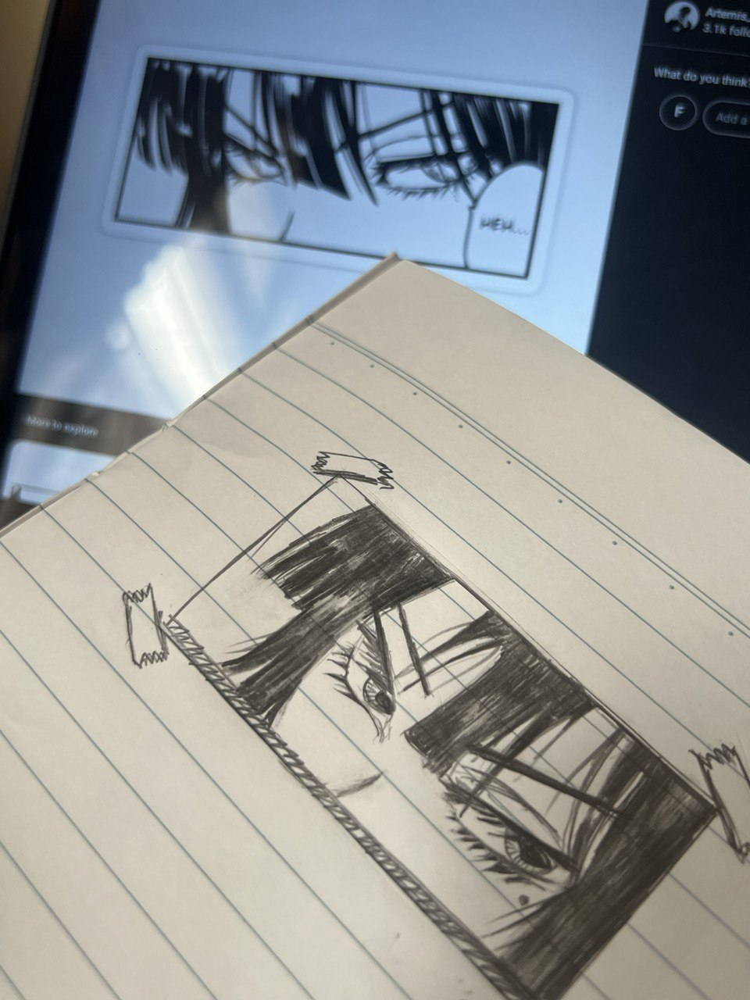
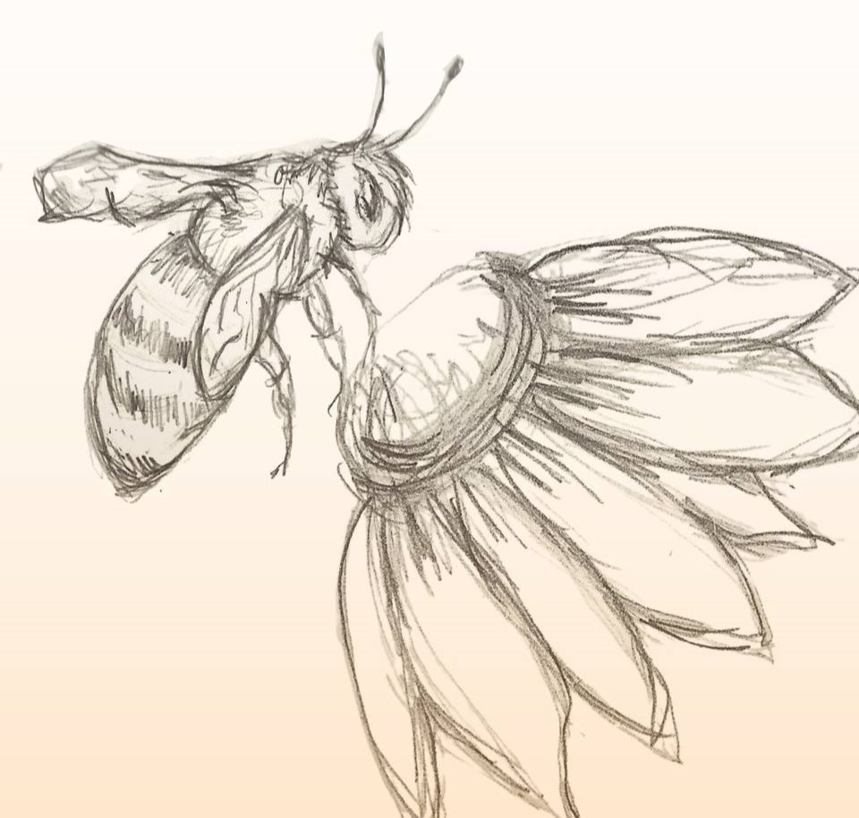
Drawing
Drawing helps me release stress, and I can freely sketch whatever comes to mind.
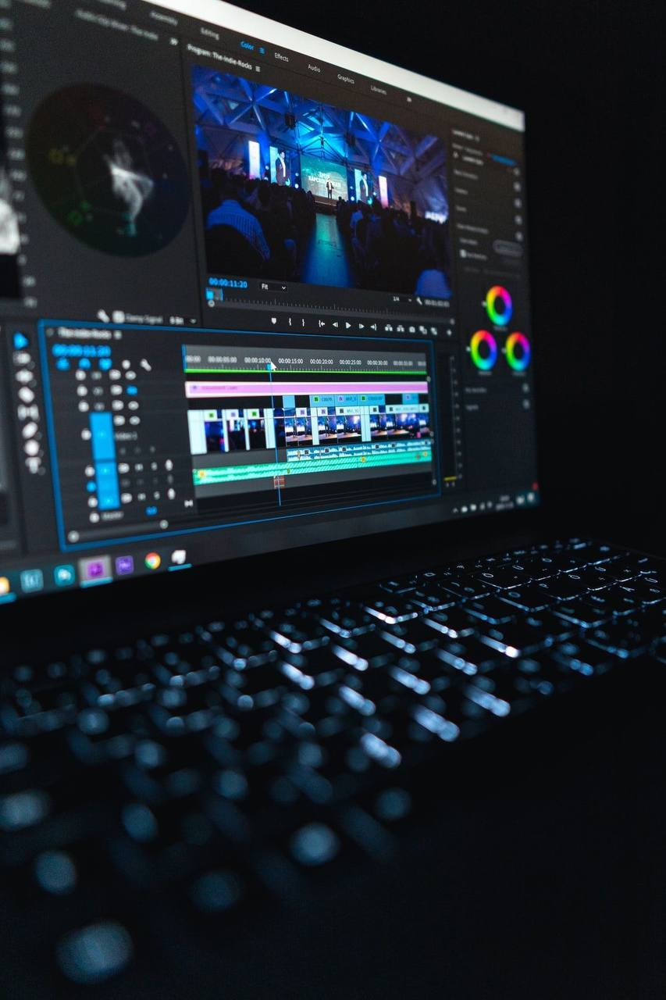

Video Edittig
I love editing videos to keep memories alive, capturing moments that I can cherish forever.
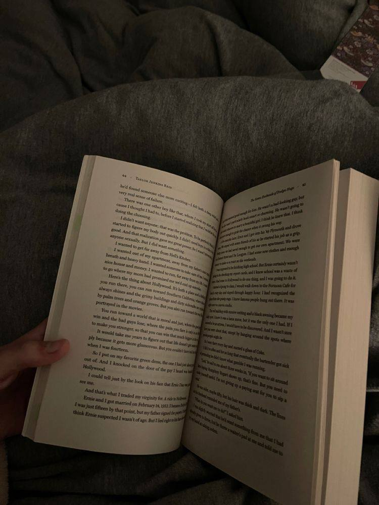
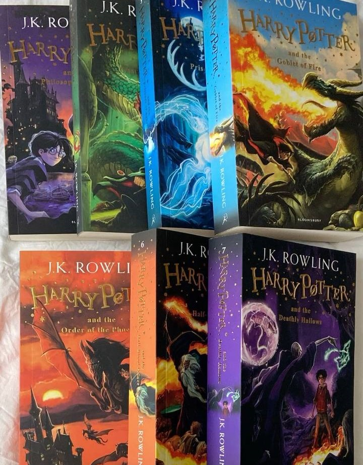
Reading Books
I enjoy reading fiction and fantasy books, especially Harry Potter, as it immerses me in a magical world filled with adventure, friendship, and wonder.
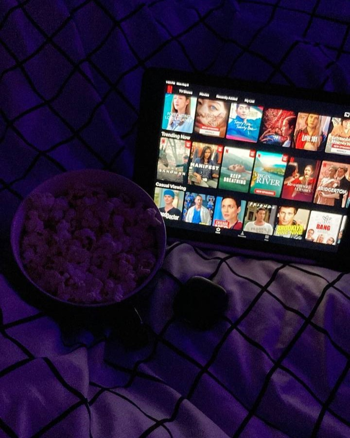
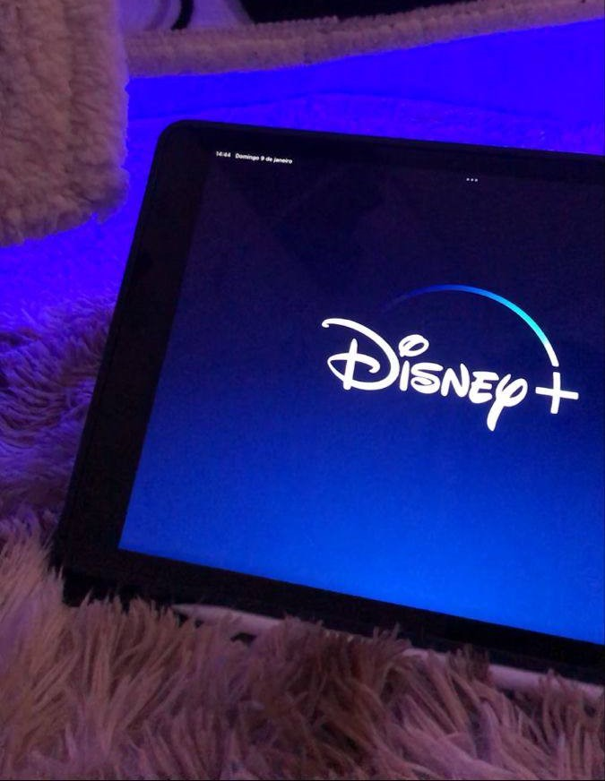
Watching Movies
I love watching movies, esecially Fantasy, action and horror, as they keep me on the edge of my seat and make every moment thrilling such as:
- Bloodhounds.
- Smile.
- Metamorphosis
- Harry Potter
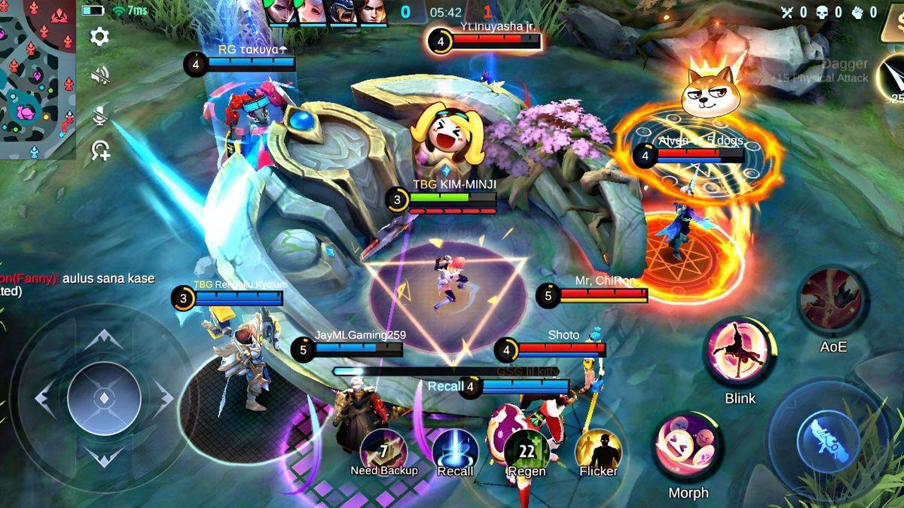
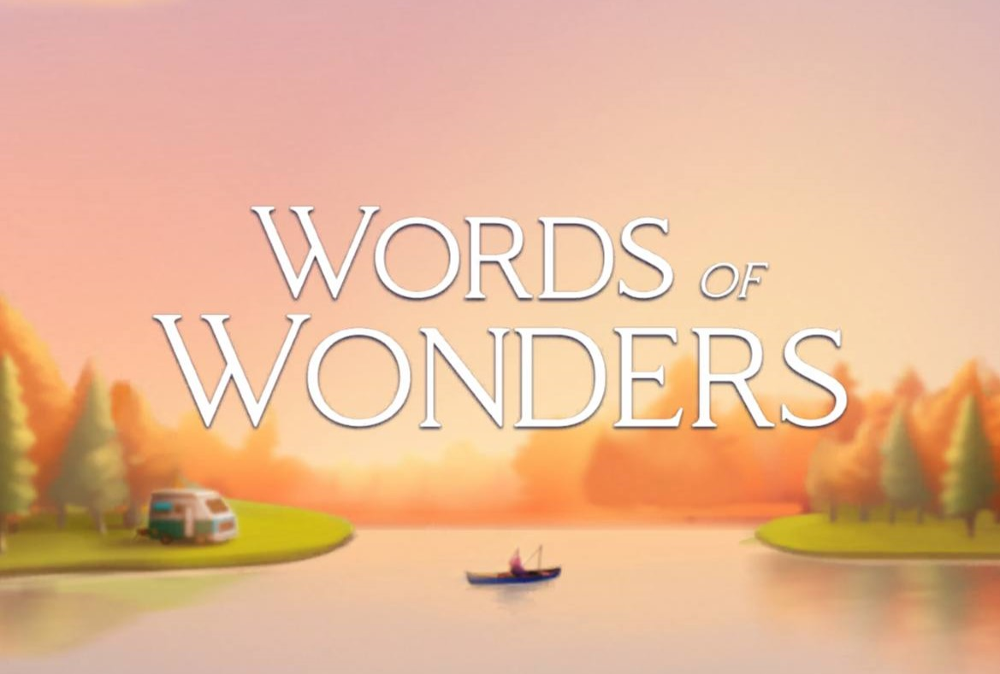
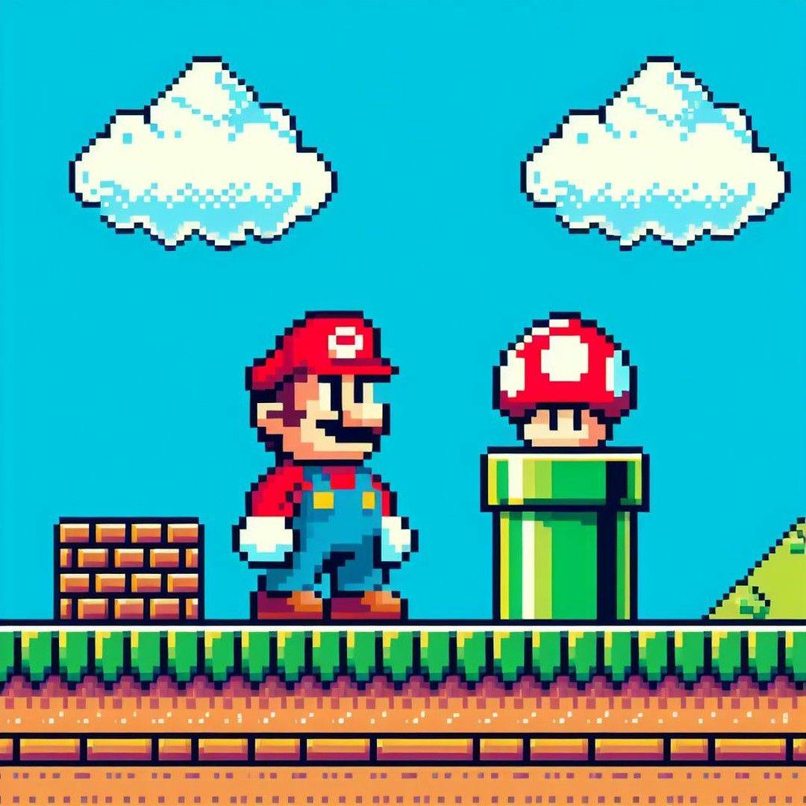
Playing Video Games
Playing video games helps me unwind and relieve stress, whether it's a puzzle game like Words of Wonders or a competitive game like Mobile Legends.